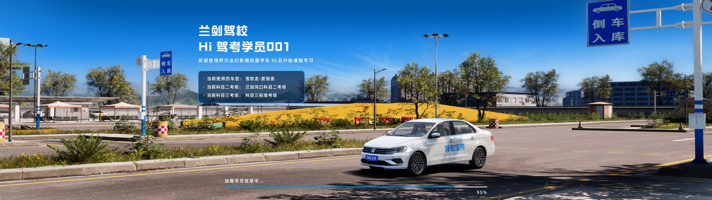
驾考宝典 · 智能驾驶模拟器 · 体验设计思考
驾考模拟器体验设计思考
从「手机刷题」到「真车驾驶舱」——一款把枯燥驾驶学习变成愉快闯关体验的智能驾驶模拟器：技能闯关、通关条件、考核徽章、排行榜、通关证书，让学员像打游戏一样主动练车，并与驾考宝典 APP 生态打通，构建「线上学 → 模拟练 → 真车考」的完整闭环。
驾考模拟器是什么
What is it模拟器是部署在驾校的智能驾驶训练设备（阿尔法幻影模拟器）：通过方向盘、离合、油门、刹车、挡位、灯光等真实驾驶部件 + 超宽曲屏，1:1 还原考试场地与交规扣分逻辑，让学员在真车练习之前，就能低成本、零风险地完成基础操作与考试项目训练。而这一切体验的底层命题只有一个——让枯燥的驾驶学习变得愉快、游戏闯关化。
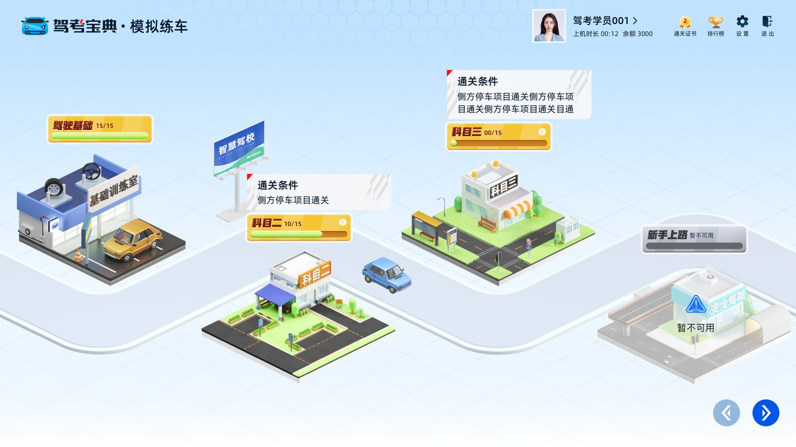
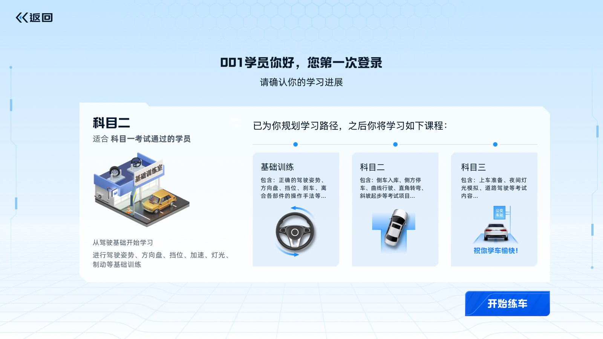
相比手机刷题 / 真车练车，模拟器的差异
Differences模拟器处于「手机 App」与「真车」之间的第三空间：它继承了真车的驾驶操作，又保留了软件的确定性、数据化与零风险。这带来了三个维度的改变。
场景的改变
从「随时随地刷题」到「固定座舱驾驶」。学员坐在真实驾驶舱内，视线从手机小屏转移到 2m+ 超宽曲屏，身体姿态、操作方式与信息获取路径完全不同。
用户的改变
从「个人自学」到「驾校多人线下场景」。计时刷卡计费、教练在场、不同年龄与基础的学员共用设备，设计必须同时服务学员、教练与驾校运营三方。
交互的改变
从「点击 / 滑动」到「驾驶操作」。方向盘、离合、油门、刹车、挡位、后视镜，交互放大为体感操作，任何 UI 都不能干扰驾驶行为本身。
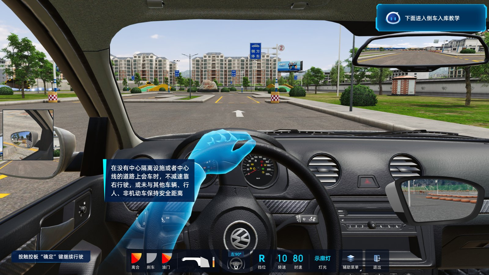
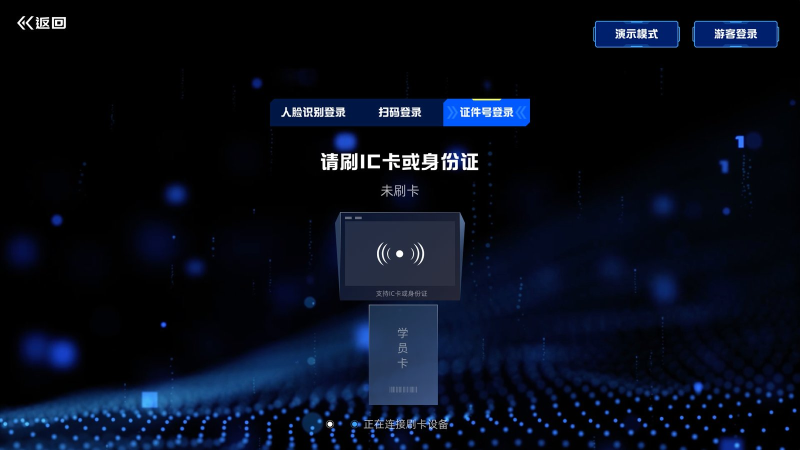
核心策略：把学车变成闯关游戏
Gameful Design模拟器真正要解决的，是「枯燥」和「畏难」：真车练车重复、紧张、缺乏反馈，学员不想练、不敢练。我们把整个练车流程包装成一场场小游戏——技能闯关、通关条件、考核徽章、排行榜、通关证书、精彩瞬间，让学员像打游戏一样，一关一关停不下来。
技能即关卡
把驾驶技能拆成 8 个可考核关卡（方向盘 / 挡位 / 灯光 / 停车起步…），从易到难形成学习阶梯，每过一关都有「考核已通过」的正反馈。
通关条件量化
每个项目明确「考试最低次数 / 考试通过率 / 练习最低时长」，目标看得见、够得着，「练到什么程度能考」一目了然。
激励与炫耀
考试通过即 PASS 徽章，通关证书、排行榜让进步被看见；练车精彩瞬间自动生成短视频扫码分享——练车成果变成社交货币。
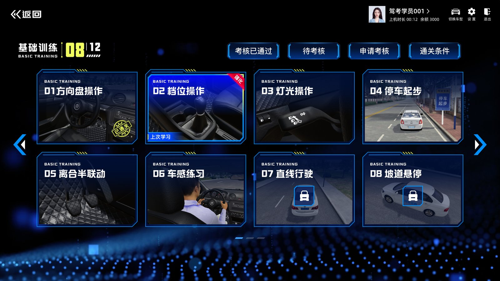
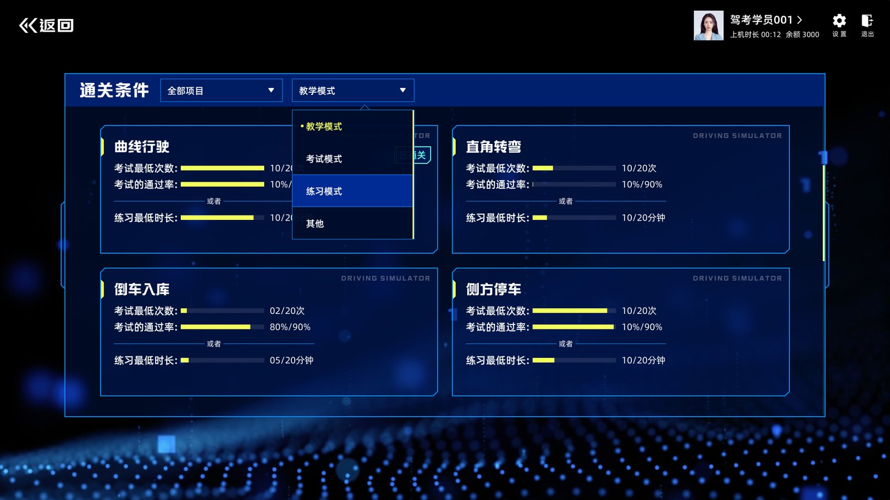
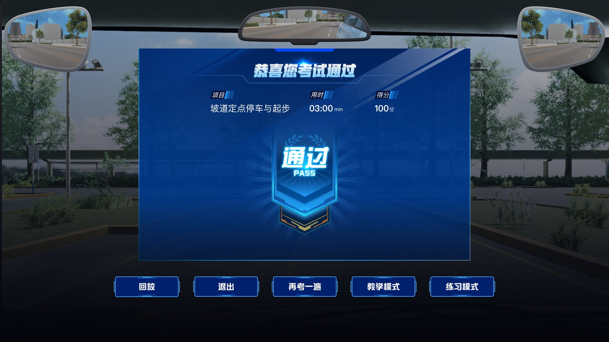
大屏驾驶舱下如何定义设计规则
Design Rules驾驶舱不是「更大的手机」。观看距离远、注意力被驾驶行为占据、硬件形态多样，因此我们用五条规则约束界面：布局容量 · 信息字号 · 图形细节 · 用色克制 · 焦点引擎。
布局定义，有迹可循
曲屏虽宽，信息容量却要克制。驾驶过程中一屏只保留 5–9 个关键信息（转速、时速、挡位、灯光、提示），遵循「米勒定律 7±2」，把干扰降到最低；主界面用「训练进度 + 模式入口」分区，一眼定位。
注意远距离信息展示
座舱观看距离远，信息必须足够大、足够清晰。驾驶状态区（转速 / 时速 / 挡位 / 灯光）使用超大字号与高对比；教学步骤逐条呈现、编号明确，保证学员余光即可读取、不打断驾驶。
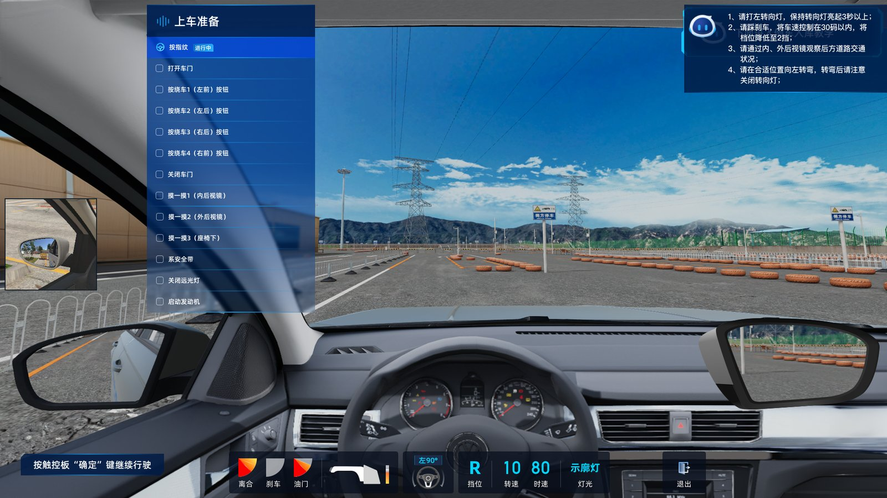
抓住图形细节
驾驶相关图标以拟物、直观为优先：挡位、灯光、后视镜、传感器一眼可懂，让没有驾驶经验的学员也能无师自通。后视镜与辅助摄像机提供可视化开关，所见即所得。
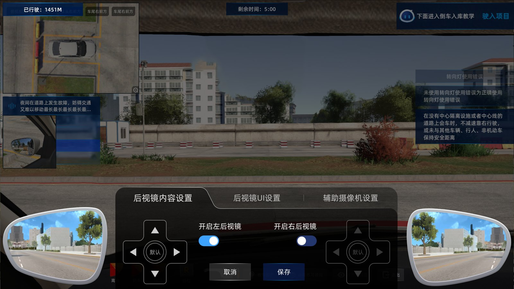
屏幕虽艳，用色却要克制
夜间、隧道等暗光驾驶场景下，界面采用深色低饱和配色，避免眩光与视觉疲劳；扣分、警告等关键状态用高亮色聚焦，但全屏色彩始终保持克制，还原真实驾驶的光感。
焦点，再清晰一点
教学提示、通关条件、扣分播报都需要明确的焦点层级——通过描边、高亮、放大等方式突出当前目标。通关条件把「次数 / 通过率 / 时长」三要素卡片化，学员练什么、差什么，一目了然。
模拟器交互怎么做到高效易用
Experience沉浸式驾驶体验
首次登录即规划学习路径，上车前完成车型与后视镜设置，进入驾驶舱后教学提示跟随驾驶步骤逐条推进，配合「按触控板确定继续」的节奏控制——全程不需要离开驾驶位。
一目了然的模式与结果
教学模式 / 练习模式 / 考试模式三态清晰切换；考试结束即时给出得分、用时与扣分明细，支持回放与「再考一遍」，结果反馈直给、一屏看懂，练完即知道下一步练什么。
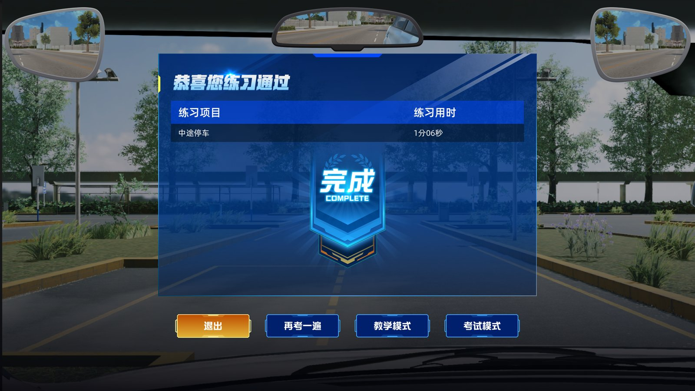
快捷设置，缩短配置路径
方向盘校验、传感器校准、抖动优化、自动挡信号、科目路线指引等高频配置集中收纳，支持一键应用与恢复默认。教练课前 1 分钟完成设备准备，学员随到随练。
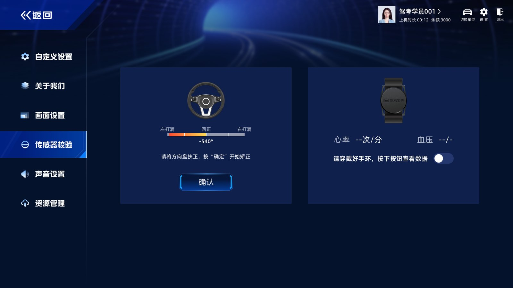
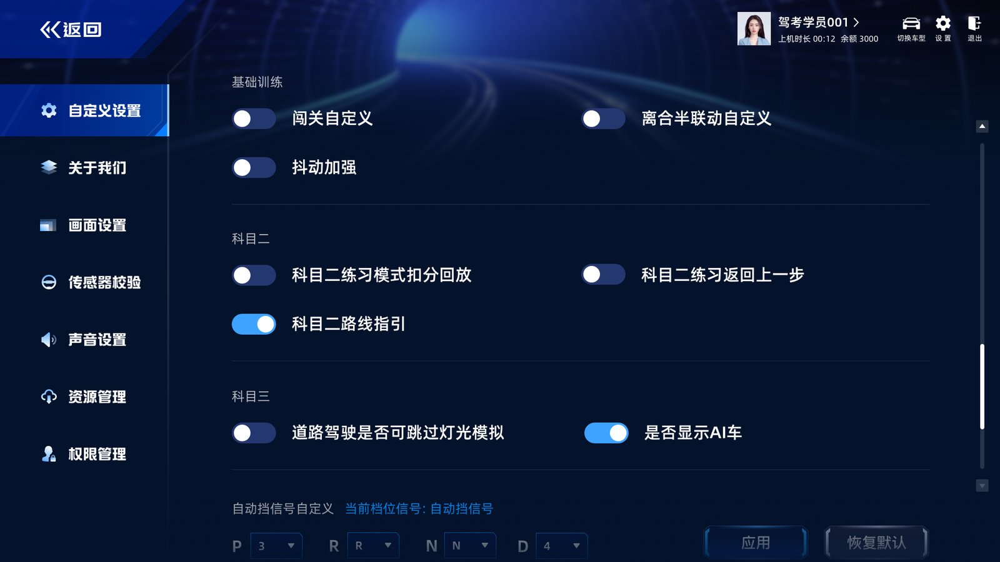
车型 / 硬件型号多样，如何准确进行用户引导
Operation Guide驾考车型多样，不同车型的离合点、挡位、仪表与视野手感完全不同；硬件端还有方向盘、曲屏、传感器等不同配置。如何让学员「上的哪台车、就还原哪台车」，是引导设计的核心难点。
梳理所有车型
建立车型库：雪铁龙爱丽舍、大众新捷达 / 桑塔纳、斯科达欣锐、现代索纳塔、传祺 GS3、比亚迪 F3 等，沉淀每款车型的驾驶参数与仪表样式。
智能还原学员手中的车
车型选择卡片化，当前车型高亮「已选择」；确认后整车驾驶参数（离合、挡位、仪表）随之切换，还原学员真实考试车型，实现「练什么、考什么」。
传感器校验
方向盘 ±540° 打满 / 回正校验、踏板与心率手环等传感器校准流程化，保证硬件状态可控、教学与计分数据准确。
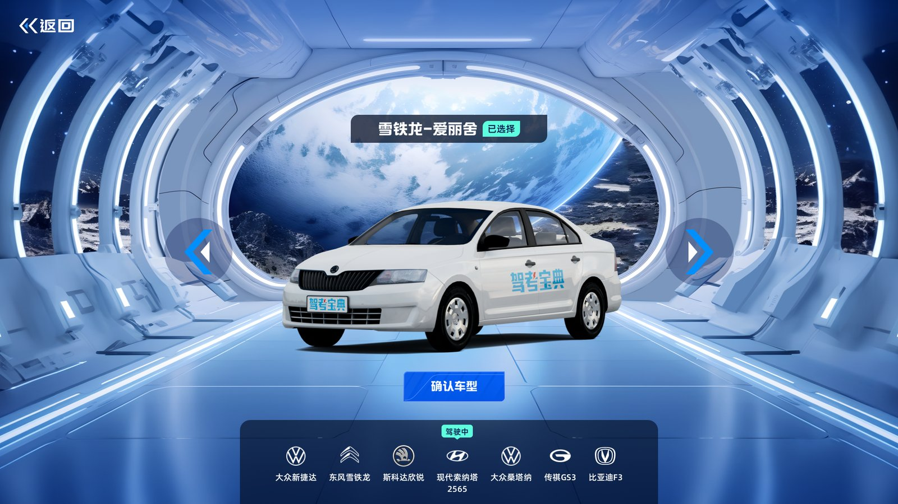
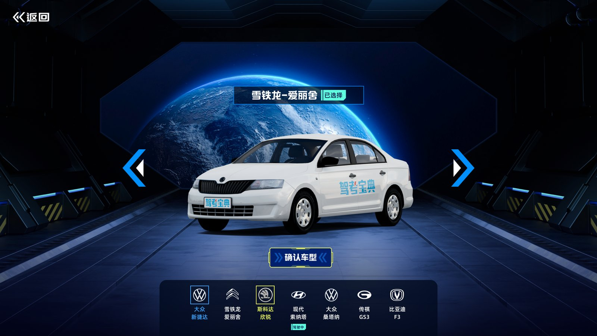
在模拟器生态中，我们还做了哪些事情
Beyond the Device与交规一致的扣分体系
扣分项与真实驾考一致（中途停车、驻车制动器等），未通过时给出扣分明细 + 分页长文案，并通过答题强化规则记忆——模拟器不只是「练手」，更是「记规则」。
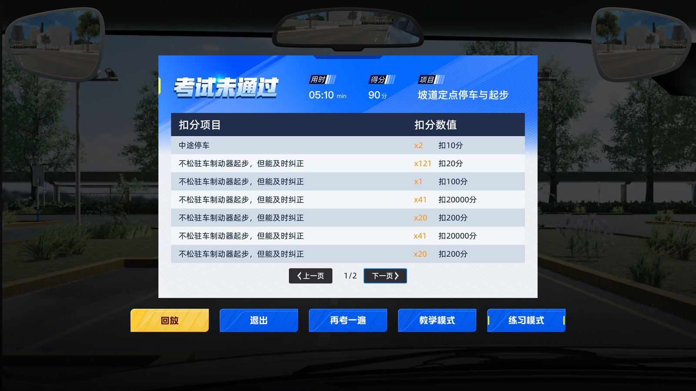
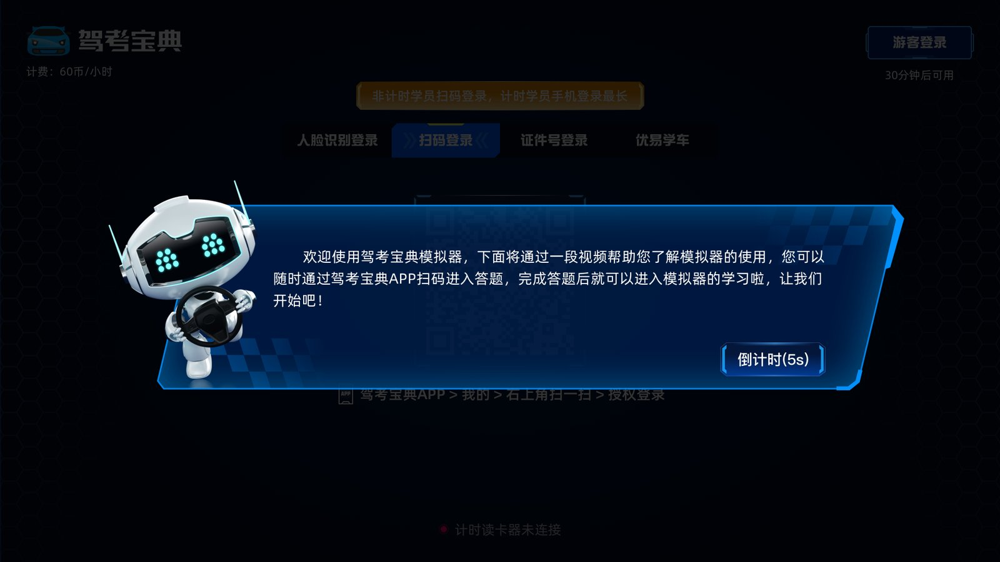
跨屏分享与 App 引流
练车精彩瞬间自动生成短视频，扫码即可分享给教练与家人；退出时引导「回家用手机免费练」，将线下体验转化为驾考宝典 App 用户，形成「线下练 → 线上学」的运营闭环。
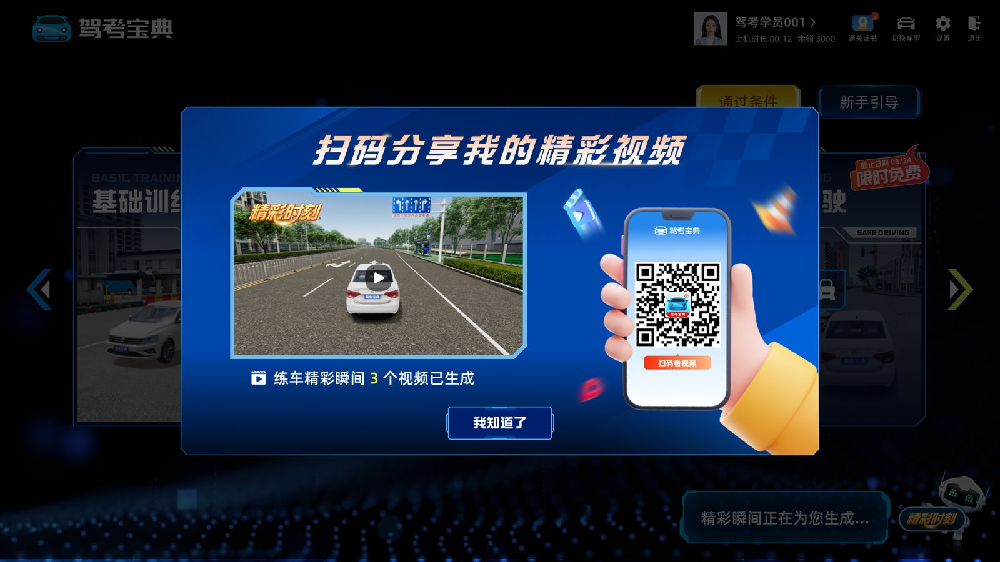
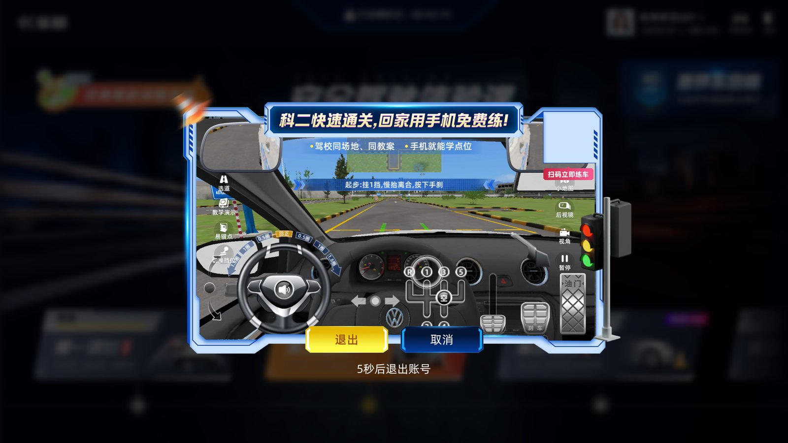
安全驾驶课程体系
面向已拿证学员的安全驾驶能力测评与 8 课时付费课程（事故案例、危险驾驶体验、交通法规）。答题采用「转动方向盘选择、深踩油门确认」的驾驶式交互，让学习本身就在驾驶舱里发生。
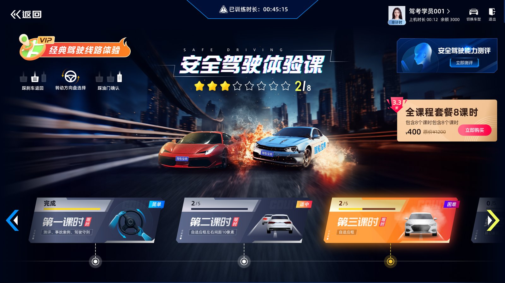
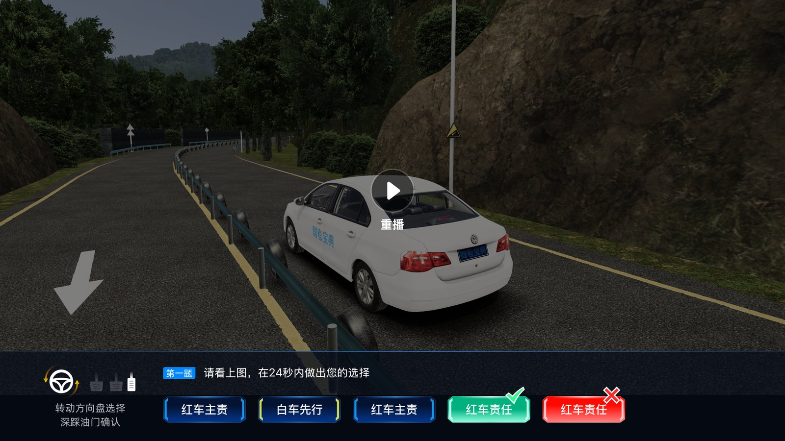
多端登录与学员数据
支持 IC 卡 / 身份证刷卡、人脸识别、扫码、证件号、游客多种登录方式，兼容计时与非计时驾校；训练记录沉淀为数据，结业自动生成毕业证书与训练分析报告。
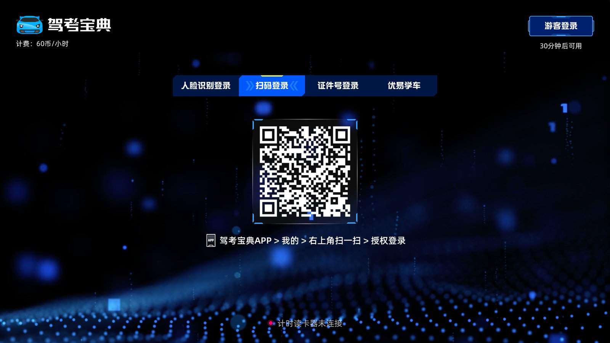
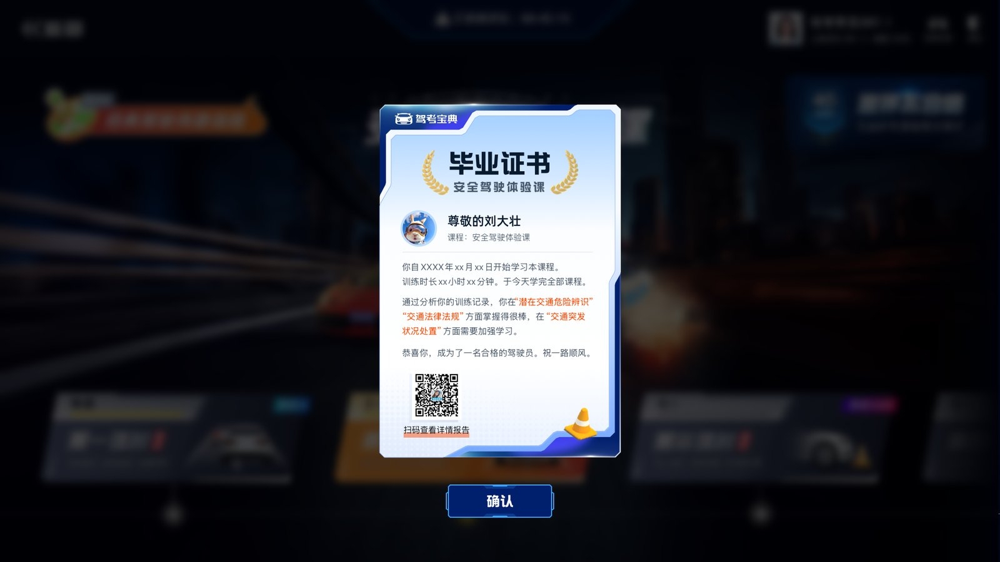
项目价值
Value- 用「闯关游戏化」重构学车体验：技能拆关卡、条件量化、即时正反馈，让枯燥练习变得愉快、有成就感
- 打通「驾考宝典 App + 线下模拟器」双端生态，形成线上学、线下练、真车考的完整链路
- 沉淀硬件驾驶模拟器的 UI 设计规范：布局容量、字号阶梯、用色克制、焦点引擎、多车型适配
- 用「驾驶式交互」替代「点击式交互」，让零基础学员也能独立完成全套训练
- 一套设计体系同时适配曲屏 / 方向盘 / 传感器等多硬件形态与多驾校运营模式
【待补充 · 建议补真实数据】：覆盖驾校数量、累计上机学员数 / 时长、科目二 / 三考试通过率提升幅度、安全驾驶课付费转化率、App 扫码引流新增用户等。作品集里哪怕 2–3 个真实数字，说服力会翻倍。